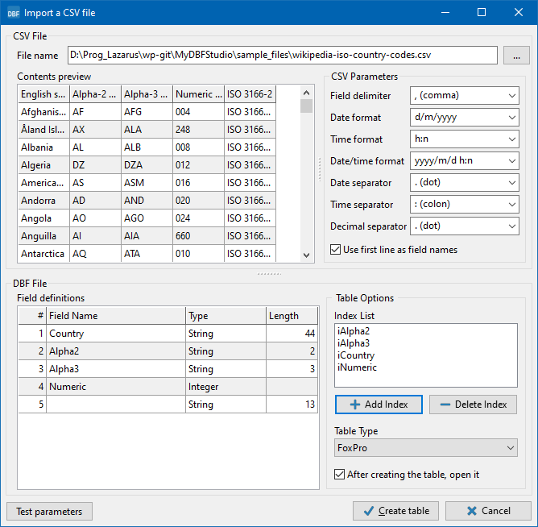

MyDbf Studio User Guide
Introduction
After starting the program you can see the main window with the menu bar and the toolbar. In the menu bar you can view the items used to manage your tables, while in the toolbar there are four buttons for basic operations (Open table, New table, Empty tables, Add two tables and Subtract two tables).
Creating a new table
On the toolbar click the New button
 or go to File > New... in the menu.
or go to File > New... in the menu.
In the window that appears you can directly insert the field name, field type and length in the grid. The length is required for string and float fields; in case of float fields, the value denotes the count of valid digits to be used. When you press the ↓ key in the last grid row an empty row is added in which you can set up a new field.
You can also choose the type of the table. The table types supported are:
- dBase III+
- dBase IV (default)
- Visual dBase VII
- FoxPro
- Visual FoxPro
Furthermore you can define indexes for the table by clicking the button Add Index. In the new window you can select the field or insert an expression between fields (like Field1 + Field2) and you can also set the options for the index (primary, unique, descending or case-insensitive). Finally you should enter a name for the index and confirm by clicking the OK button.
To save the new table, just click on the Create table button and select the path and the name of the file.
Opening an existing table
On the toolbar click the Open button or go to File > Open... in the menu. Browse the file system until you find the file you want to open and select it. You can also select multiple files to open by pressing the CTRL key while clicking. Alternatively you can also drag dbf files from the operating system onto the MyDbf Studio window. Or you can specify the file name(s) as parameter(s) on the command line:
mydfstudio file1.dbf file2.dbf
Opening an existing table by alias
On the toolbar, click the Open by alias button
 or go to File > Open by Alias in the menu.
You can use an internal alias to open the file in any location on your
hard disk. This function speeds up the search of a table in your
archives. To define a new alias just click on the Add Alias button
and insert a name for the alias and the path where the tables are - these
data will be displayed in the upper grid (MyDbf Studio Alias).
When you click on one of these entries the names of the associated files
will appear in the lower view (Files).
Here you can select one or more tables to open.
or go to File > Open by Alias in the menu.
You can use an internal alias to open the file in any location on your
hard disk. This function speeds up the search of a table in your
archives. To define a new alias just click on the Add Alias button
and insert a name for the alias and the path where the tables are - these
data will be displayed in the upper grid (MyDbf Studio Alias).
When you click on one of these entries the names of the associated files
will appear in the lower view (Files).
Here you can select one or more tables to open.
Renaming a table
If after opening a table you need to save it under a different name, you can use the Save As command in item File of the menu bar. This command will also export index files.
Closing a table
To close a table simply click on the button x of the window or go to File > Close in the menu.
Closing all open tables
To close all open tables simply go to File > Close All.
Working with a table
After you have successfully opened a table, you encounter this:

As you can see, everything you need to manipulate your table is in this window.
Next to the record indicator at the very left, there is a first group of buttons which is used to navigate between records, to insert, delete, edit...
The second group of buttons invokes special functions like:-
 Restructure allows you to change the table structure or indexes.
Restructure allows you to change the table structure or indexes.
- Set field value allows you to set a value for all table records for a specific field. Can either be a fixed value or the result of a mathematical operation between two fields (+, -, *, /).
- Deletes only visible (non-filtered) records.
-
 Empty table deletes all records in the table.
Empty table deletes all records in the table.
- Pack table compacts the table, i.e. physically removes the deleted records.
- Auto-fill columns: If pressed, the width of the grid is evenly distributed to all columns so that all of them are visible without scrolling. If released, the widths are reverted to the values setup in the dbf file.
Moreover, in the Filter field you can enter a command to filter the table records, e.g.: Field1="Test" or DateField > "2017/02/03"
The combobox contains the list of indexes on the table, you just click on it to select one. This sorts the grid by the index specified.
By checking Show deleted records you can activate the visualization of deleted records.
Exporting a table to other formats
MyDbf Studio allows you to export data to various file formats. The following formats are currently supported:
- Comma Separated Values (.csv)
- HTML file (.html)
- Microsoft Excel© sheet (.xls)
- DBF Table (.dbf)
- XML File (.xml)
In all cases, you can choose which fields of the active table will be exported.
Exporting table to Comma Separated Value file (.csv)
With an active table selected, click on Tools > Export > To CSV File, the following window will appear on the screen:

As you can see, you can check which fields to export. Also you can specify the separator between the data fields, the date format, the field delimiter and possible strings to be ignored. The values set as shown in the image generate a file type like this:
"FIELD1","FIELD2"...
Click on the OK button, and you can choose the location where to save the file.
Exporting table to HTML file
With an active table selected, click on Tools > Export > To HTML File, the window will appear on the screen:

In this window you can set the look of the table that will be generated in HTML format.
In the Page Title you can specify the title of the html page, the default is the dbase file name. Also in this form, you can select the fields to export. Click on the OK button and you can choose the location where to save the file
Exporting table to XLS file
With an active table selected, click on Tools > Export > To XLS File, and the following window will appear on the screen:

In this window you can set the parameters necessary to create the .xls file for Excel©:
- Format Number shows how integer values will be displayed.
- Format Number Width Decimals indicates the number of decimals of a floating point number and the decimal separator.
- The Mask field shows how the numbers are grouped to indicate tens, hundreds, thousands, etc.
- In the Date Format it is possible to define the date format that you prefer.
Also in this export, can select the fields to export. After clicking on the OK button, you must choose the location where to save the file.
Exporting table to DBF file
With an active table selected, click on Tools > Export > To DBF File, and the following window will appear on the screen:

This feature allows you to export a table to another dbf table but you can choose which fields you need in the new file You can also specify a different type of table.
Warning: The indexes are not exported.
Click on the OK button, and you can choose the location where to save the file.
Exporting table to XML file
With an active table selected, click on Tools > Export > To XML File. The following window will appear on the screen:
This function creates a file in XML format that represents the records displayed on screen. The file can be viewed with any web browser and can be used to send data between remote computers.
Click on the OK button and you can choose the location where to save the file.
Exporting table to SQL script
With an active table selected, click on Tools > Export > To SQL Script. The following window will appear on the screen:
This function creates a script file in SQL language that allows you to create the table in an SQL database and to insert the records displayed on screen. You can chose to generate only the CREATE TABLE script or the script with the INSERT INTO commands, or both files.
Click on the OK button and you can choose the location where to save the file.
Importing a table from other formats
MyDbf Studio allows you to import data from other file formats. Currently only the CSV (Comma Separated Values) format is supported.
Importing a table from Comma Separated Value file (.csv)
When you click on Tools > Import > From CSV File, you must first select the name of the csv file to be imported. Then the following window will appear on the screen:

In the top part of the form you can see the contents of the csv file. If
the separation of the individual fields in a row is not successful you
must adjust the setting for the
In the lower part the list of extracted fields is displayed: the field name taken from the first data line if Use first line as field names is checked, or a generic name otherwise, the field type and the field size. When the field type is not detected correctly you may have to adjust the settings in the CSV parameters block. Do not forget to press Test parameters to repeat the field extraction.
You can prepare indexes from the detected fields, and you can select the table type for the export.
Finally click Create table to start with the conversion after specifying a file name for the new dbf table.
Adding two tables
This function works on two equal tables and allows you to add records from the first table to the second, or vice versa. At first, you need to open the two tables, then go on to Tools > Add Two Tables; then this window will appear:

Just select the first and the second table from tables used in the program and decide the priority of the operation. Finally click on OK to start the operation.
Subtracting two tables
This function always works on two equal tables and allows you to remove similar records from two tables. At first you need to open the two tables, then go on to Tools > Substract Two Tables; then this window will appear:

Just select the first and the second table from tables used in the program and decide the priority of the operation. Finally click OK to start the operation.
Emptying one or more tables
If you want to delete all records in one or more tables without opening files you can use the function located in Tools > Empty tables...: simply select the table(s) that you want to empty and click on Open.
Sorting a table on fields
This function sorta a table's records on fields defined by the user. With an active table selected, click on Tools > Sort Table, and the following window will appear on the screen:

Just select the sort order (ascending or descending) and the field(s) that you want to use for sorting records and click on the OK button.
ATTENTION: This function is very slow on tables with many records.